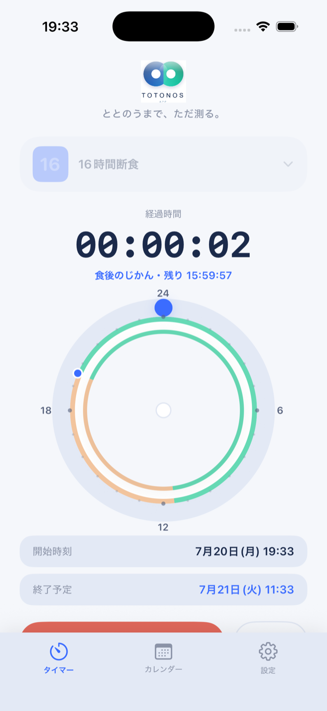
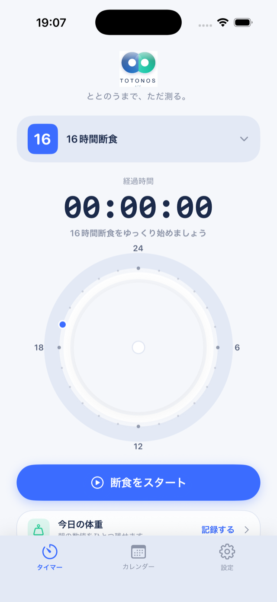
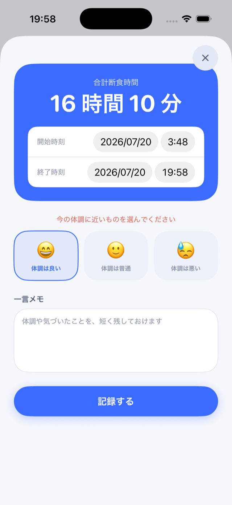

TOTONOS — 断食タイマー
ととのうまで、ただ測る。16時間断食を、がんばりすぎずに続けるためのiPhoneアプリ。タイマーを押すだけ。広告なし、アカウント不要、記録はぜんぶ端末の中だけ。
App Storeで入手する 無料・課金なし・iOS 16以降 ／ 旧 farst
- 価格無料（課金なし）
- 広告なし
- アカウント登録不要
- データ端末内のみ保存
- 対応iPhone / iOS 16以降
- 言語日本語
TOTONOSとは
TOTONOS（ととのう）は、「食べない時間」を測るだけのシンプルな断食タイマーです。食事記録アプリのような細かい入力はありません。夜、食べ終わったらスタート。翌日、食べる前にストップ。それだけで記録が積み重なっていきます。
ストイックに追い込むためのアプリではなく、体調を見ながら自分のペースで続けることを大切にしています。勝ちに行くのではなく、リズムがととのうまで、ただ測る——そんな道具です。
主な機能
1タップのタイマーと24時間ダイヤル
スタートを押すだけで計測開始。24時間ダイヤルに「食べない時間」と「食べていい時間」が描かれ、いま自分がどこにいるのかがひと目でわかります。
ホーム画面ウィジェット対応
ホーム画面とロック画面のウィジェットに対応。アプリを開かなくても、経過時間と目標までの残りを確認できます。
プランは16・18・20・24時間＋カスタム
定番の16時間断食（16:8）から、12〜23時間のカスタムプランまで。慣れてきたら少しずつ伸ばす使い方ができます。
体調メモ・体重・カレンダー
断食の終わりに体調とひとことメモを、朝には体重を残せます。カレンダーには月ごとのふりかえり、連続記録、体重の推移が育っていきます。
CSVで書き出し・読み込み
断食の記録も体重もCSVファイルで書き出せます。機種変更やバックアップも安心です。


使い方は3ステップ
- 夜、食べ終わったら「断食をスタート」をタップ
- 翌日、最初の食事の前に「断食を終了」をタップ
- 体調をひとこと残して保存（任意）
よくある質問
TOTONOSは無料ですか？
はい、完全に無料です。広告表示もアプリ内課金もありません。
16時間断食のタイマーとして使えますか？
使えます。16時間・18時間・20時間・24時間のプリセットに加えて、12〜23時間のカスタムプランを作成できます。
ホーム画面ウィジェットはありますか？
あります。ホーム画面とロック画面のウィジェットに対応していて、アプリを開かなくても経過時間と目標までの残りを確認できます。
広告は表示されますか？
表示されません。バナー広告も動画広告も一切ありません。
アカウント登録は必要ですか？
不要です。インストールしてすぐに使えます。メールアドレスなどの個人情報も入力しません。
記録したデータはどこに保存されますか？
すべてお使いのiPhoneの中にのみ保存されます。サーバーへの送信は行っていません。詳しくはプライバシーポリシーをご覧ください。
機種変更のとき記録は引き継げますか？
引き継げます。設定からCSVファイルで書き出し、新しい端末で読み込めます。手順はサポートページにあります。
体重も記録できますか？
できます。1日1回、朝の体重を残せて、カレンダーで推移を見られます。
オフラインでも使えますか？
使えます。タイマー・記録・分析のすべてがインターネット接続なしで動作します。
TOTONOSは以前のfarstと同じアプリですか？
同じアプリです。farstから名称をTOTONOSに変更しました。アップデートすると、これまでの記録はそのまま引き継がれます。
Androidには対応していますか？
現在はiPhone（iOS 16以降）のみの対応です。
断食は誰でもできますか？
TOTONOSは時間を記録する道具であり、医療アプリではありません。体調と相談しながら無理のない範囲で行ってください。持病のある方、妊娠中・授乳中の方は開始前に医師にご相談ください。
ダウンロード
App Store（日本）で無料配信中です。